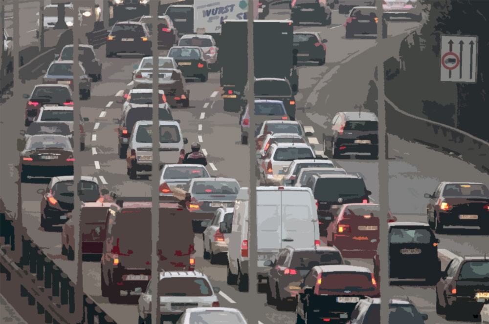
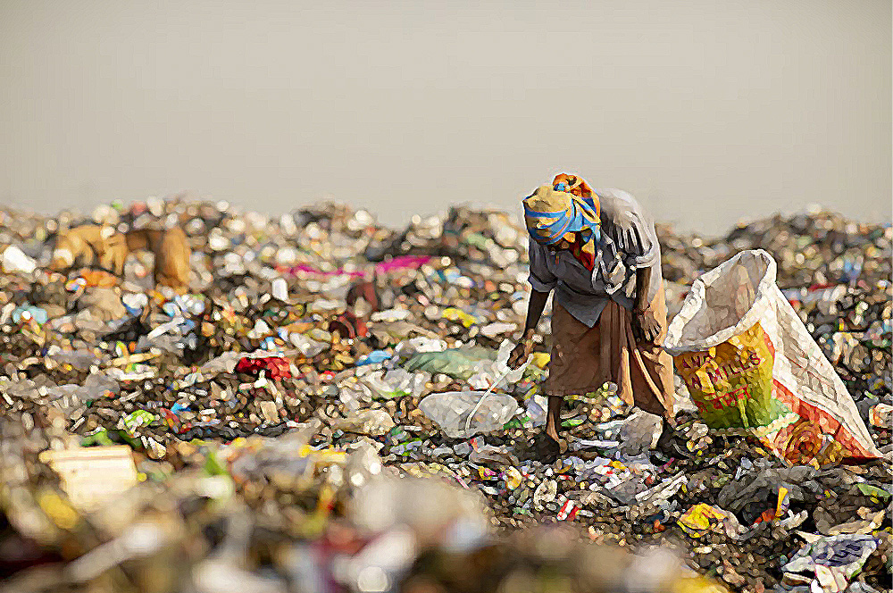
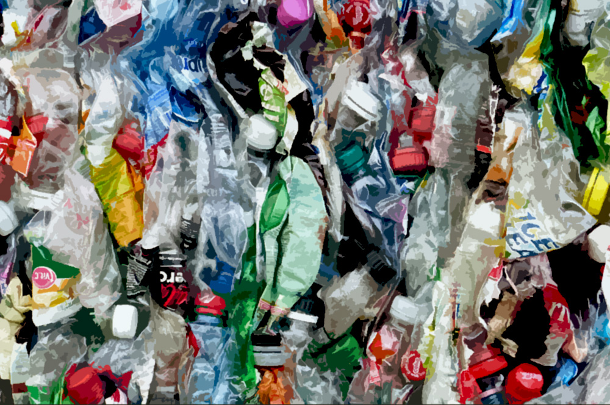

╰─────────────────────────────────────────────╯
╭──────────────────────────────────────╮
Food
Experts agree that eating low on the food chain as much as possible is an
excellent approach to lower your carbon footprint and stay healthy. That
includes veggies, fruits, grains, and legumes on your plate. Even replacing
carbon-intensive meats like beef and lamb with chicken can make a difference
for meat eaters. Even better, make a few vegan or vegetarian dishes per
week. This protein card can assist you in making environmentally sustainable
and budget-friendly grocery store decisions.
- Consume local and seasonal products
- Limit meat consumption, especially beef
- Select fish from sustainable fishing
- Bring reusable shopping bags and avoid products with excessive plastic packaging
- Make sure to buy only what you need
- Reduce the consumption of beef and diary
- Eat locally-produced organic food
- 13% of carbon emissions are a result of the production and transport of food
╰──────────────────────────────────────╯
╭──────────────────────────────────────╮
Transport
Do you travel a lot? Taking one fewer long round-trip travel could drastically
reduce your personal carbon footprint.
Consider this: if you take public transit frequently
and just go home to see family once in a while, your carbon footprint may still be
manageable,
but if you drive and fly frequently, your emissions will be larger.
Some ways to reduce this are to:
- Cycle or use public transport
- Be smart about when and how you drive
- Try the train for your next holiday
- Avoid Traffic
╰──────────────────────────────────────╯
╭──────────────────────────────────────╮
Energy and Waste
According to estimates from the Natural Resources Defense Council,
25% of energy is used to heat spaces, 13% is used to heat water,
11% is used for cooling, and the rest is spent on appliances in the average
American home.
Even tiny adjustments can make a tremendous difference.
- Take short showers
- Turn off the water while you brush your teeth or clean the dishes
- Unplug your electronic equipment and don't leave your phone on charge when the battery is already full
- Limit and recycle your waste
- Implement solar panels for electricity
- Turn off lights that are not in use
- Keep Thermostat off when you're not home
- Invest in rechargeable batteries
╰──────────────────────────────────────╯
╭──────────────────────────────────────╮
Recycling
 According to a 2014 report from the Environmental Protection Agency, Americans
generate nearly 258 million tons of waste each year,
with 169 million tons ending up
in landfills and incinerators. That year, Americans recycled and composted 89 million
tons of municipal solid trash, saving enough
energy to power 25 million households
for a year. However, much of the recyclable garbage still finds its way into landfills.
- Buy less and reuse products
- Refuse Single-Use Practice
- Recycle paper and steel and tin cans.
- Donate working electronics or other products that still work
╰──────────────────────────────────────╯
╭──────────────────────────────────────╮
Home

Small improvements to your home's insulation and design can help you lower
your carbonfootprint.
You may also do an energy audit or hire a professional to
assess and test your home's energy efficiency before you begin.
- Insulate and seal your home
- Turn down the heat
- Make energy efficiency a primary consideration when choosing a new oven, air conditioning unit, refrigerator, or dishwasher.
- Look for an Energy Star symbol since they are the most energy-efficient products
- Turn off lights you're not using and when you leave the room.
- Replace incandescent light bulbs with LED ones.
- Add solar panels to the roof of your home.
- This costs a bit, but adding solar panels can help a lot.
- Doing two loads of laundry weekly in cold water instead of hot or warm water can save up to 500 pounds of carbon dioxide each year.
╰──────────────────────────────────────╯
╭──────────────────────────────────────╮
What We Can Do
- Know what climate change is and spread awareness to a friend or family member
- Find an organization to join and discuss issues
- Attend meetings and find ways to help in your community
- Vote on policies that protect the environment. Use your vote to curb climate change.
╰──────────────────────────────────────╯